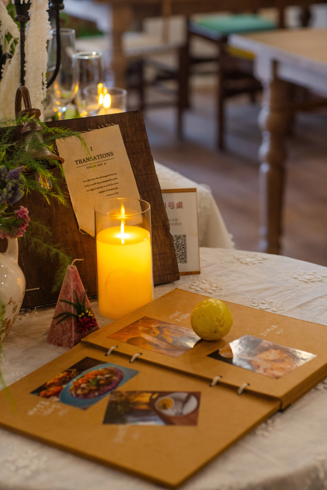
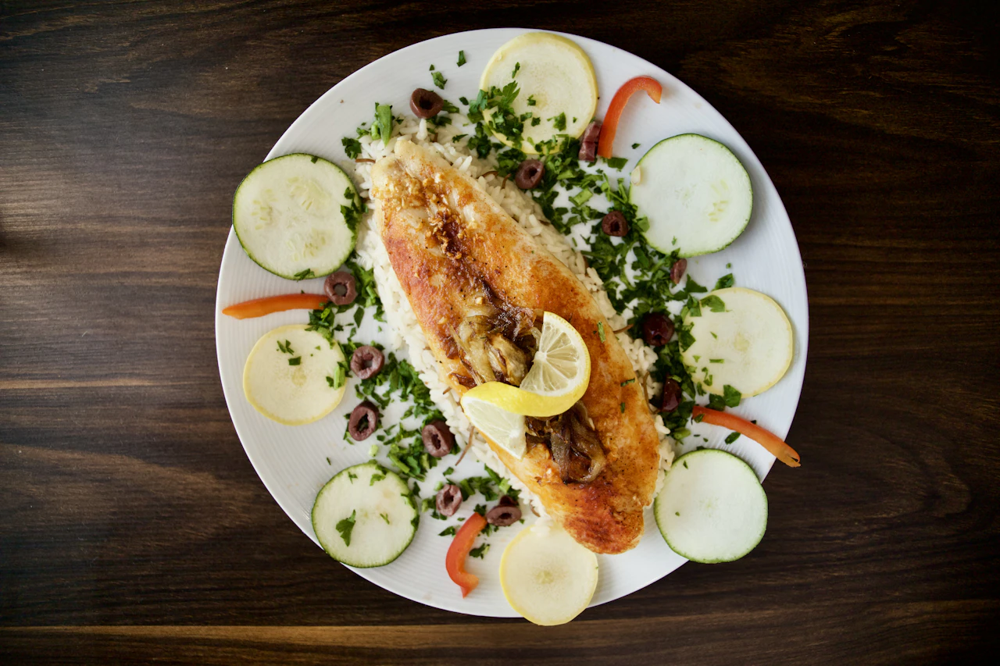

Gastronomia, bem-estar e descobertas para viver o Mediterrâneo no seu ritmo.
A
Saborear
Gastronomia
Sabores que revelam o destino
Restaurante do Terraço
Cardápios sazonais de inspiração mediterrânea valorizam ingredientes frescos, frutos do mar de origem selecionada e o cuidado de uma cozinha que respeita os sabores. No terraço ao ar livre, os almoços se estendem e os jantares ganham a luz das velas.

Jantar privativo
Celebre uma ocasião com um jantar preparado para você, na privacidade da sua suíte ou em um espaço reservado do resort. Um futuro serviço de concierge ajudará a definir o cardápio e os detalhes do encontro.
Renovar
Bem-estar
Espaço para se renovar
Spa Aurelia
Salas tranquilas, rituais corporais restauradores e jornadas de relaxamento personalizadas oferecem uma pausa acolhedora entre os dias de descoberta.
Movimento à beira-mar
Comece o dia com alongamento orientado, uma caminhada pelo litoral ou uma sessão privativa de yoga adaptada ao seu ritmo e à sua experiência.
Descobrir
Descoberta
Além da linha do mar
Passeio privativo de veleiro
Explore enseadas protegidas e paisagens de mar aberto em um passeio de veleiro sem pressa, com tempo para nadar e saborear um piquenique preparado, quando as condições permitirem.

Sabores e tradições locais
Conheça a identidade da região em uma visita guiada ao mercado, em uma aula de culinária sazonal ou em uma degustação que revela as histórias por trás de cada ingrediente.
Cada experiência, bem cuidada
Experiências ilustrativas, ainda sem reservas. Valores, horários, acessibilidade e condições serão definidos posteriormente.